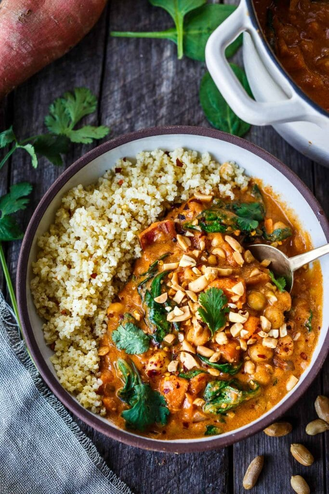

Peanut soup

Description
An interesting and exotic soup that's also very rich.
By Allrecipes Member
Ingredients
- 4 tablespoons margarine
- 3 tablespoons minced onion
- 1 clove garlic, minced
- 1 tablespoon all-purpose flour
- 1 cup heavy whipping cream
- 1 cup peanut butter
- ½ cup ground peanuts
- 4 cups chicken broth
- salt and pepper to taste
Steps
- In a heavy soup pot melt the butter.
- Add the onion, garlic, flour and peanut butter.
- Stir until very smooth. Beat in the stock and season well with salt and pepper.
- Simmer over low heat until thick, about 20 minutes. Stir in the cream and heat through.
- Serve warm with ground peanuts.